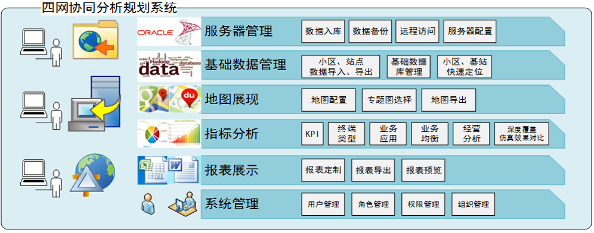
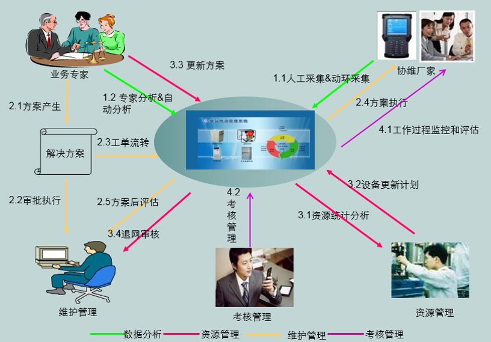
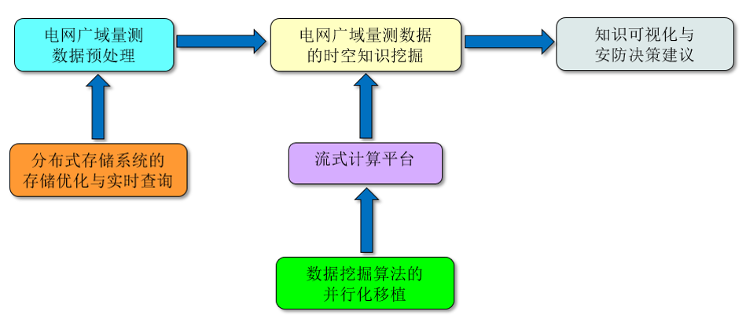
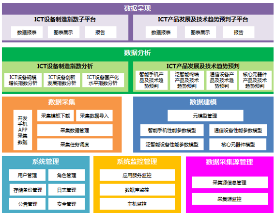

承担的主要大数据项目
大数据项目组成员：
- 1位教授，博导（IEEE senior member) ，5位年轻老师，皆为香港科技大学访问学者，均为IEEE member;
- 2位全职博士后，8位在读博士生;
- 40多位在读硕士研究生;
承担的主要大数据研究项目:
- 中国银联大数据平台优化与客户推荐数据挖掘，重大横向项目，面向银行业，已完成第一期，已在启动二期合作，2013.12-2015.6;
- 工信部电信规划研究院四网协同决策分析平台工信部重大专项，2013/6/1-2014/2/1;
- 北京创智科技基于大数据平台的基站电源管理系统；省级运营商基站电源管理系统，2012/1/1-2014/1/1;
- 北医三院基于大数据平台的ICT呼吸机生命体征决策系统；北医三院前沿研究项目，2014/1/1-2016/12/31;
- 国网电力大数据“基于大数据技术的大电网稳定态势量化评估与自适应防控关键技术研究”项目中国电力科学研究院，2015年1/1–2017/12/1;
- 网络信息空间大数据计算理论，国家重点基础研究发展计划（973），2014/1/1-2018/12/31;
- 海量弱可用信息上的近似计算理论和算法研究，国家重点基础研究发展计划（973），2012/1/1-2016/12/31;
- 基于天河超级计算机的大数据处理关键技术研究，广州超算中心合作项目，2014/1/1-2016/12/31;
- 面向时空大数据的大数据处理与挖掘技术研究，华为诺亚方舟实验室合作项目，2012/10/1-2013/9/30;
- 基于云存储的海量时空数据处理关键技术和实现，科技部港澳台科技合作专项，2012/1/1-2014/12/31;
- 科技部支撑计划“智慧医疗AnyCheck平台”项目与深圳易特科公司申请的科技部医疗大数据项目（在申请中）;
- 发改委专项“新媒体大数据行业解决方案申请书”与海尔集团共同申请的发改委新媒体大数据项目（在申请中）;
工信部四网协同规划优化决策平台:
基于大数据的运营基站电源管理平台:

基于大数据技术的大电网稳定态势评估与自适应防控关键技术研究:

ICT设备制造产业研究平台升级改造项目:
